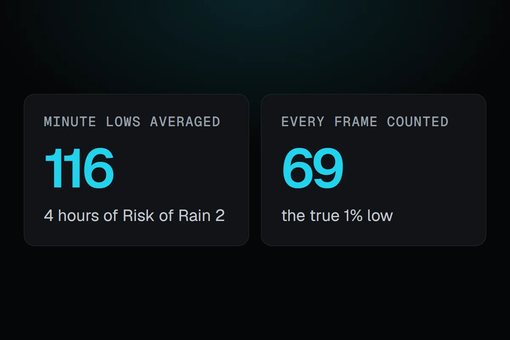
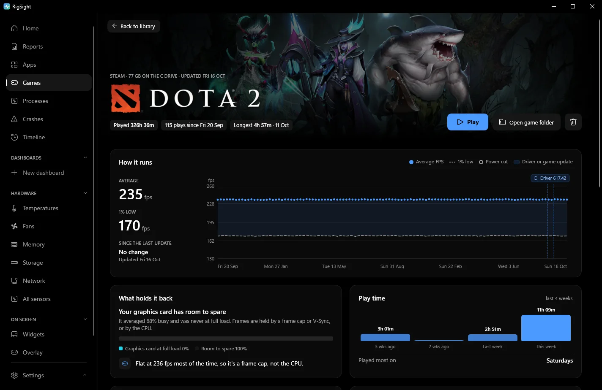

PC problems · FPS and games
1% low FPS meaning, and why my 116 was really 69
Four hours of Risk of Rain 2 at 187 FPS. Each minute's 1% low, averaged, said 116. Counting every frame together, it was 69. The 1% low FPS meaning in plain words, what a good gap to the average looks like, and how to see and fix it.

The short answer
1% low FPS is the frame rate of the slowest 1% of frames. The average tells you how fast a game runs. The 1% low tells you how smooth it feels. When the 1% low stays close to the average, play feels even. When it falls far below, you feel hitches.
On 28 October I played Risk of Rain 2 for about four hours, at an average of 187 FPS. If you take the 1% low of each minute and average them, you get 116, which looks fine. Counting every frame of those four hours together, the real 1% low was 69, and RigSight found 3,281 stutters. Two numbers from the same hours of play told different stories. Here is the 1% low FPS meaning in plain words, why the way it's measured matters, and what to do when yours is bad.
How RigSight caught it
Before version 0.35.0, RigSight's 1% low was an average of RivaTuner's own 1% lows, each worked out over the last 1,024 frames. Averaging lows from short windows smooths the worst moments away, the same way my minutes averaged out to 116. On 25 October I asked for something better, a record of every frame instead of an average. Since 0.35.0, RigSight keeps every frame's time from RivaTuner, sorted into narrow bands each minute. That takes about 60 bytes a minute, and it lets RigSight work out the true 1% and 0.1% lows for any stretch of play, from a single minute to a whole month.
It also counts stutters. A stutter is one frame that took at least 2.5 times as long as the frames just before it, and at least 20 ms. A game running at 144 FPS that jumps from 7 ms frames to 20 ms is a hitch you feel, while 8 to 12 ms isn't. Nothing is counted while a game runs under 20 FPS overall, so loading screens don't count. When five or more stutters bunch up within 15 minutes, RigSight names what else was busy at that time, like another app reading the disk hard.
On the Games page, each game says how smooth it plays, as Smooth, Mostly smooth or It stutters, from how many stutters an hour it had, with the 0.1% low beside it. My Risk of Rain 2 day had about 780 stutters an hour, so it stutters. The Can it run better? card compares the 1% low with the average. At 70% of the average or above, it says the game plays smoothly. Between 50 and 70% it says you may feel the odd stutter, and below 50% it says it stutters. My 69 against 187 is 37%.
The How it runs chart draws each play's average as a line with a dot for each play, and the 1% low dashed under it. Graphics driver installs and game updates are marked between plays, so a gap that grew after one of them stands out. Every play below lists its stutters. While you play, the overlay and widgets can show the 1% low live next to the frame rate. Frame times come from RivaTuner Statistics Server, which has to be running before the game starts, and the Games page has a button to install or start it. RigSight is free and open source.

Why the 1% low tells you more than the average
A game doesn't make frames at an even pace. Some frames take 7 ms, some take 9 ms, and now and then one takes 30 ms. Average FPS hides that. It adds all the frames up and divides by the time.
The 1% low looks only at the slowest frames. Take every frame from a stretch of play, sort them from fastest to slowest, and look at the slowest 1%. Turn that frame time into a frame rate, and you have the 1% low. A frame rate is 1,000 divided by the frame time in milliseconds, so these frame times give these frame rates.
- 16.7 ms per frame is 60 FPS.
- 25 ms per frame is 40 FPS.
- 50 ms per frame is 20 FPS.
So a 1% low of 40 means that one frame in every hundred took 25 ms or longer. In a game running at an average of 100 FPS, that is about one slow frame every second.
Your eyes notice changes in pace more than the pace itself. A steady 60 FPS feels smooth. A game that runs at 140 FPS but drops a few frames to 30 every second feels worse, even though its average is more than double. Each slow frame is a tiny freeze, and you feel it as a hitch when you turn the camera. That is why reviewers show the 1% low next to the average.
Tools work it out in slightly different ways. Some take the frame time at the 99th percentile, the point that 99% of frames are faster than. Others average all the frames in the slowest 1%. The second way gives a lower number. An average of several short windows' lows, the way RigSight used to do it, gives a higher one. Compare 1% lows only between runs measured with the same tool. The 0.1% low is the same idea for the slowest one frame in a thousand, and it catches rare big hitches.
What is a good 1% low?
There isn't an official number. What matters is the gap to your average. This is RigSight's own rule of thumb, not an industry standard.
- A 1% low at 70% of the average or higher plays smoothly. 100 average with 75 lows is fine.
- Between 50 and 70% of the average, you may feel the odd stutter.
- Below half of the average, the game stutters. 100 average with 40 lows feels rough.
Two more checks help. If you have a G-Sync or FreeSync monitor, try to keep the 1% low above the bottom of its variable refresh range, which is in the monitor's specs. And for fast shooters, a higher 1% low is usually worth more than a higher average.
How to see your 1% low and fix 1% low FPS drops
These are the common ways to see it.
- MSI Afterburner with RivaTuner Statistics Server. In Afterburner's settings, open Monitoring, tick Framerate 1% Low and turn on Show in On-Screen Display. RivaTuner must be running to draw the overlay. MSI notes the 1% low may only update while benchmark recording runs, so set a benchmark hotkey on the Benchmark tab and press it in game.
- CapFrameX, a free tool that records a run and shows the averages, the lows and a frame time graph.
- Many games' own benchmark modes, which print average and lows at the end.
Measure the same stretch of play each time, and play it for a minute or more. A 1% low from ten seconds of play swings a lot from run to run.
When the 1% low is far below the average, look for something that interrupts the game now and then. Try these in order.
- Close background work. Launchers downloading updates, browsers playing video and cloud sync all grab CPU and disk time at random moments. Press Ctrl + Shift + Esc and sort Processes by CPU and Disk.
- Check graphics memory. If video memory sits at your card's full size, the game swaps data in and out, and you get spikes. Lower Texture quality first.
- Check for a CPU limit. Poor lows with low GPU load in busy scenes usually mean the CPU is the limit. GPU not at 100% usage but low FPS shows the test.
- Set a frame cap. A cap a little below what your PC holds in busy scenes trades a few frames of average for a much steadier pace. With G-Sync or FreeSync, cap a few frames below the refresh rate. VSync vs an FPS cap explains why.
- Give it a second session after updates. After a new graphics driver or game patch, many games rebuild their shaders while you play, and the first session hitches. If it stays bad, see FPS drops in games.
- Rule out heat. A GPU or CPU at its limit slows down in bursts. Normal GPU temperature while gaming has the numbers.
- Set Windows to Best performance in Settings > System > Power & battery > Power mode, and play laptops on the charger.
For finding what causes the hitches themselves, see games stuttering on PC. Next time a game feels off, look at the 1% low before the average, and check how your tool works it out. If the 1% low is under half the average, work through the fixes above in order.
Questions people ask
What is 1% low FPS?
It is the frame rate your game stays above for 99% of its frames. Take every frame time you measured, find the slowest 1%, and turn that time into a frame rate. A 1% low of 40 means one frame in a hundred took 25 ms or longer.
What is a good 1% low FPS?
There is no official number. RigSight's own rule of thumb compares it with your average. A 1% low at 70% of the average or more usually feels smooth, and below half of it you will feel stutter. It also helps if the 1% low stays above your monitor's lower G-Sync or FreeSync limit.
Why are my 1% low FPS drops so big?
Big gaps usually come from the CPU being the limit in busy scenes, graphics memory running out, shaders compiling during play, or background apps grabbing CPU or disk time. A first session after a driver or game update often has worse lows than later ones.
Does low FPS cause lag?
Low FPS makes the picture update less often, so the game feels slower to respond, but it isn't network lag. Ping and packet loss cause network lag. A low 1% low feels like a short freeze or hitch, which people often call lag too.
How do I see 1% low FPS in MSI Afterburner?
In Afterburner's settings, open the Monitoring tab, tick the Framerate 1% Low entry and turn on Show in On-Screen Display for it. RivaTuner Statistics Server must be running, since it draws the overlay. MSI notes the 1% low may only update while benchmark recording runs, so set a benchmark hotkey on the Benchmark tab and press it in game.